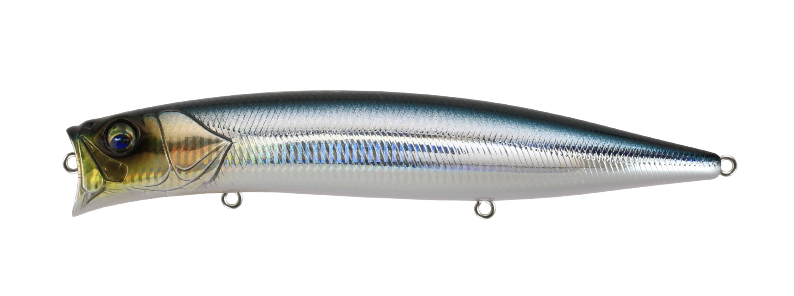
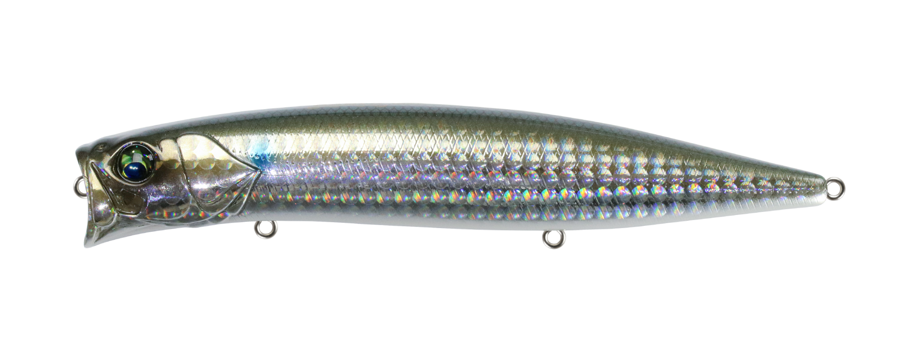
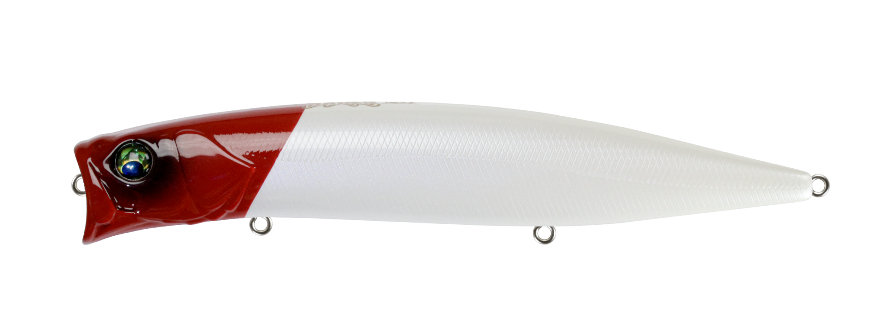
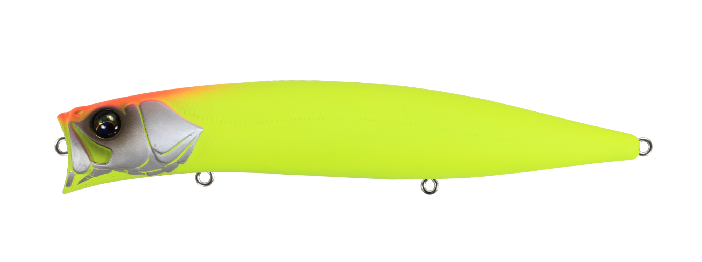

ハーデス127F
（HADES 127F）
ハーデス127F（HADES 127F）はBASSDAY（バスデイ）のシャローミノーです。
「どんなシチュエーションでも浅場を攻略できるミノー」という構想から生まれた、リップのない127mmモデル。TSLシステムによるMAX70mの飛距離と振り抜けの良さで、投げ続けることが気持ちよく楽しめる1本です。

画像出典:バスデイ公式HP
スペック
- メーカー
- BASSDAY（バスデイ）
- タイプ
- フローティング（リップレスシャローミノー）
- 全長
- 127mm
- 自重
- 25.3g
- レンジ
- 20〜50cm（ゆっくり巻いた時）
- フック
- #4
- リング
- #3
- 飛距離
- MAX70m
- ターゲット
- シーバス・ヒラメなど
- 価格
- 2,585円（税込）
▼今すぐチェック

ハーデス127Fの特徴
リップレス×TSLで、MAX70mの飛距離とナチュラルな泳ぎを両立した浅場攻略ミノー
-
TSLシステムでMAX70mの飛距離
球状タングステン4個による重心移動をTSLで固定し、MAX70mの飛距離を実現。振り抜けの良さと飛行姿勢の良さで、投げ続けても気持ちよく使える。
-
リップレスでも着水後すぐに泳ぎ出す
リップのないハーデス127Fの重心移動の戻りを早くするため、あえて球状タングステンを採用。腹部の固定ウエイトも相まって、着水後は驚くほど自然に泳ぎ出す。
-
ナチュラルな泳ぎと「ちどる」食わせの間
バタバタしたアクションではなく、あくまでナチュラルな泳ぎ。流れから一瞬外れてちどるようなアクションにこだわり、これが食わせの間になる。流れの速い川でも暴れにくい。
ハーデス127Fの使い方
基本はゆっくり目のただ巻き。ゆっくり巻くことで20〜50cmのレンジをナチュラルに泳ぐので、まずはスローに巻いてレンジをキープする。
流れのある場所では、流れに乗せながら巻いて「ちどる」アクションを引き出すのがコツ。飛距離を活かして沖のシャローや離れたシモリの上まで届かせ、手前までじっくり引いてくるのが基本の組み立てです。
ハーデス127Fの得意な状況
サーフの浅場や極浅の干潟、磯場のシモリの上など、浅場を広く探りたい状況が最大の出番。
リップ付きミノーでは攻めにくい表層を意識している魚や、流れの速い川でナチュラルに見せたい場面でも選びたい1本です。
ワンポイント
リップレスなので、巻きスピードを上げすぎるとレンジが浅くなりやすくなります。まずはゆっくり巻いて泳ぎを確認し、狙うレンジに合わせて速度を調整しましょう。
ベイトが小さい時は75F、大きいベイトやより強いアピールが欲しい時は150Fと、サイズで使い分けると効果的です。
ハーデスシリーズの使い分け
| モデル | 全長／自重 | 得意な場面 |
|---|---|---|
| 75F | 75mm／11g | 小型ベイト・水面直下MAX40cm程度 |
| 127F | 127mm／25.3g | MAX70mの遠投で浅場を広く探る・レンジ20〜50cm（本記事のモデル） |
| 150F | 150mm／40g | 大型ベイト・存在を気づかせるボリューム |
ハーデスは75F・127F・150Fの3サイズ展開。ベイトのサイズと必要な飛距離でサイズを選び、127Fは汎用性と飛距離のバランスが取れた中核モデルだ。
オススメカラー
ハーデス127Fは豊富なカラーを展開。オススメのカラーを厳選して紹介します。

HS-181 リアルベイトベイトを再現したナチュラル系。澄み潮やデイゲームの基準カラーに。

LH-498 バクボラボラパターンを意識したカラー。ボラが入っている河川や干潟で。

レッドヘッド定番のレッドヘッド。ナイトゲームや状況が読めない時のパイロットに。

マットチャートシルエットがはっきり出るマットチャート。濁りやマズメ時に。
画像出典:バスデイ公式HP
ハーデス127Fに似ているルアー
-
 フィードシャロー128F
タックルハウス
詳細はこちら＞
フィードシャロー128F
タックルハウス
詳細はこちら＞
128mmの定番シャローミノー。ナチュラルヘッドロールで広く探る基準の1本で、もっと遠くへ届かせたい時はハーデス127Fと使い分けたい。
-
 アイザー125F
ブルーブルー
詳細はこちら＞
アイザー125F
ブルーブルー
詳細はこちら＞
125mmのシャローランナー。誰が投げても飛ぶ先発役として、ハーデス127Fと同じく広いシャローを探る場面で選択肢が重なる。
-
 カゲロウ124F
メガバス
詳細はこちら＞
カゲロウ124F
メガバス
詳細はこちら＞
124mmのシャローランナーの定番。重心移動の飛距離で表層を攻めるという狙いどころが、ハーデス127Fと共通する。